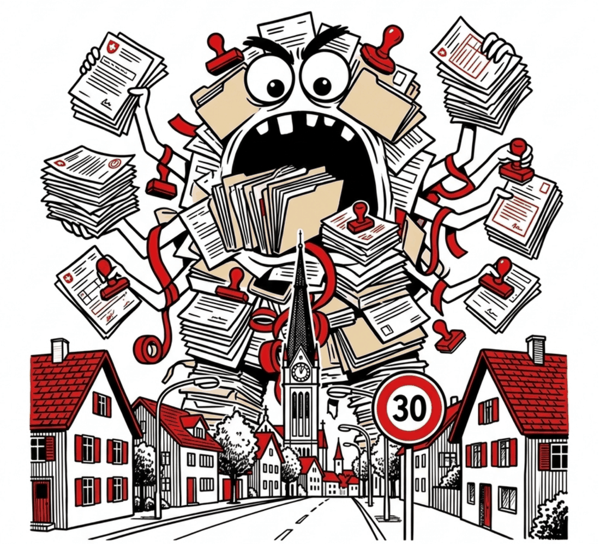
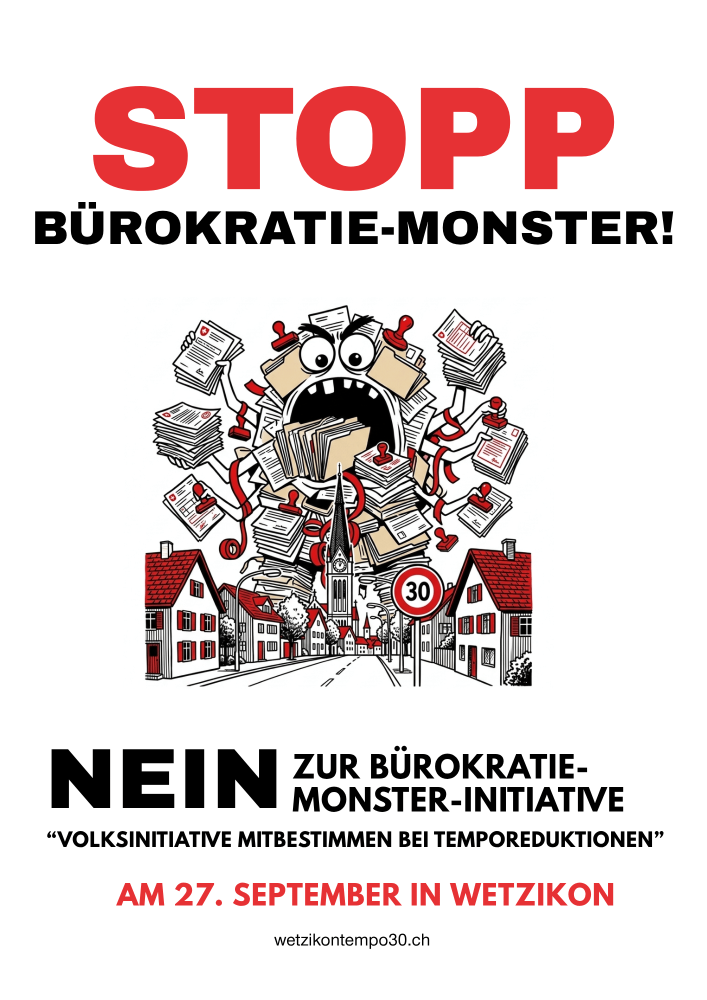

Teuer und unnötig.
Die Initiative macht aus jeder dauerhaften Temporeduktion einen Parlamentsbeschluss mit fakultativem Referendum. Damit drohen Abstimmungen am Laufmeter, und jede davon kostet Geld, Verwaltungsaufwand und Monate an Zeit.

NEIN
zur Bürokratie-
Monster-Initiative
Volksinitiative «Mitbestimmen bei Temporeduktionen»
Am 27. September an der Urne in Wetzikon
Die Volksinitiative «Mitbestimmen bei Temporeduktionen» verlangt eine Änderung der Gemeindeordnung: Neu soll nicht mehr der Stadtrat, sondern das Parlament beschliessen, ob bei der Kantonspolizei ein Antrag für dauerhafte Temporeduktionen wie Tempo 30 auf Gemeindestrassen gestellt wird. Jeder dieser Beschlüsse unterstünde dem fakultativen Referendum. Im Ergebnis droht eine Urnenabstimmung über jede einzelne Temporeduktion.
Die Initiative macht aus jeder dauerhaften Temporeduktion einen Parlamentsbeschluss mit fakultativem Referendum. Damit drohen Abstimmungen am Laufmeter, und jede davon kostet Geld, Verwaltungsaufwand und Monate an Zeit.
Betroffene können sich schon heute im Einwendungs- und Rekursverfahren wehren. Die Initiative schafft keine neue Mitsprache in der Sache, sondern eine zusätzliche politische Schlaufe für jedes einzelne Tempo-Gesuch.
Auch mit der Initiative reicht der Stadtrat den Antrag formell ein, und den endgültigen Entscheid trifft die Kantonspolizei. Wetzikon würde über Anträge abstimmen, die der Kanton am Ende entscheidet: Leerlauf statt Lösungen.
Befristete Massnahmen, etwa bei Baustellen oder Veranstaltungen, sind von der Initiative nicht betroffen. Der endgültige Entscheid fällt ohnehin nicht in Wetzikon: Den Antrag kann nur eine Gemeindebehörde einreichen, und über die Temporeduktion entscheidet abschliessend die Kantonspolizei.
Das Parlament stellt der Initiative einen Gegenvorschlag gegenüber. Auch er verschiebt die Zuständigkeit vom Stadtrat zum Parlament, beschränkt das fakultative Referendum aber auf verkehrsorientierte Strassen. Betrifft eine Temporeduktion nur siedlungsorientierte Strassen wie Quartierstrassen, ist kein Referendum möglich. Stadtrat und Parlament empfehlen beide, die Initiative abzulehnen, und geben in der Stichfrage dem Gegenvorschlag den Vorzug. Beim Gegenvorschlag selbst sind sie sich uneinig: Das Parlament empfiehlt Annahme, der Stadtrat Ablehnung.
Die Stichfrage entscheidet, welche Vorlage gilt, falls beide angenommen werden. Auch Stadtrat und Parlament geben in der Stichfrage dem Gegenvorschlag den Vorzug.
Der Kampagnenflyer steht allen zur Verfügung, die das Nein unterstützen.
